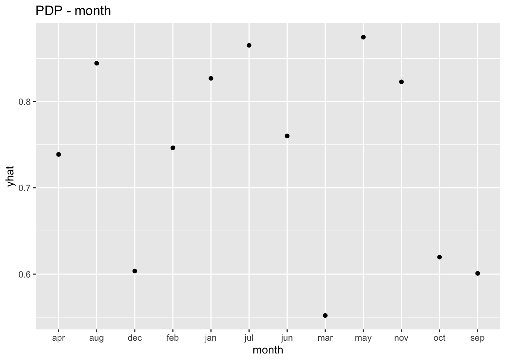
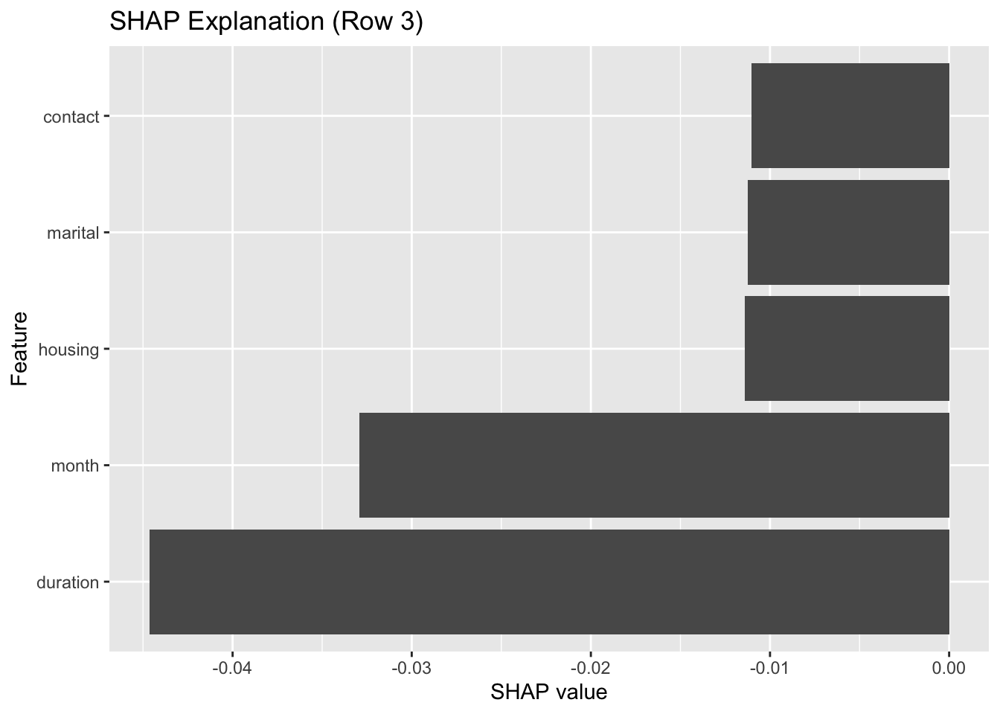
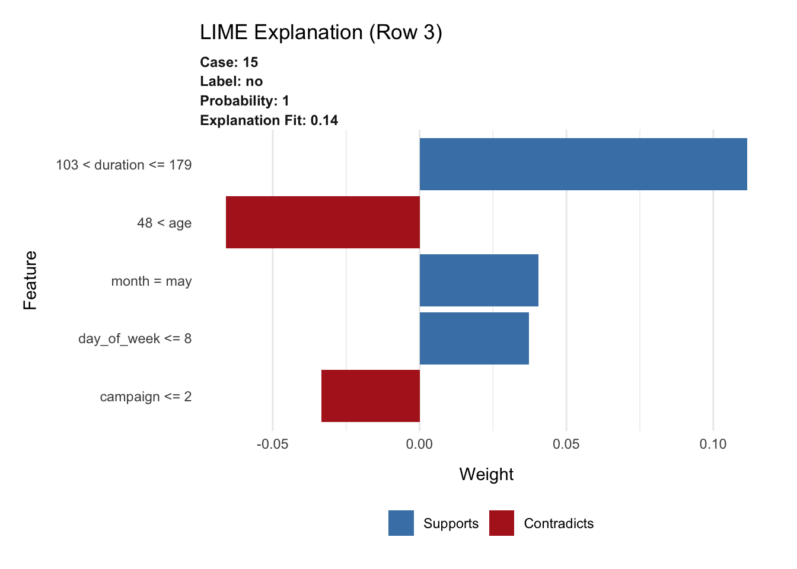

Code
# Load libraries
library(ucimlrepo)
library(dplyr)
library(caret)
library(randomForest)
library(lime)
library(fastshap)
library(ggplot2)
library(Matrix)
library(vip)# Load libraries
library(ucimlrepo)
library(dplyr)
library(caret)
library(randomForest)
library(lime)
library(fastshap)
library(ggplot2)
library(Matrix)
library(vip)# Load the dataset
bank <- fetch_ucirepo("Bank Marketing")
df <- bind_cols(bank$data$features, y = bank$data$targets$y)
# Encode categorical features as factors
df[] <- lapply(df, function(col) if (is.character(col) || is.logical(col)) as.factor(col) else col)
# Remove high-cardinality categorical variables
valid_cols <- sapply(df, function(col) !is.factor(col) || nlevels(col) <= 20)
df <- df[, valid_cols]
# Ensure target variable is a factor
df$y <- as.factor(df$y)set.seed(5293)
split_idx <- createDataPartition(df$y, p = 0.8, list = FALSE)
train_data <- df[split_idx, ]
test_data <- df[-split_idx, ]
train_X <- train_data %>% select(-y)
train_y <- train_data$y
test_X <- test_data %>% select(-y)
test_y <- test_data$yNext, a stratified 80/20 train-test split was applied using caret::createDataPartition() to ensure balanced representation of the target classes in both sets. The final working dataset contains a mix of numerical and low-cardinality categorical features, enabling a robust evaluation of local explanation techniques on structured data typical of banking and marketing domains.
# Train RF
set.seed(5293)
rf_model <- randomForest(y ~ ., data = train_data, ntree = 100, importance = TRUE)
# Predict
train_preds <- predict(rf_model, newdata = train_data)
test_preds <- predict(rf_model, newdata = test_data)
# Accuracy
train_acc <- mean(train_preds == train_data$y)
test_acc <- mean(test_preds == test_data$y)
# Precision (positive class: "yes")
precision <- function(true, pred) {
cm <- confusionMatrix(pred, true, positive = "yes")
cm$byClass["Precision"]
}
cat("Training Accuracy:", round(train_acc, 3), "\n")Training Accuracy: 1 cat("Test Accuracy:", round(test_acc, 3), "\n")Test Accuracy: 0.908 cat("Test Precision:", round(precision(test_data$y, test_preds), 3), "\n")Test Precision: 0.637 # Generate confusion matrix for test data
cm <- confusionMatrix(test_preds, test_data$y, positive = "yes")
# Extract recall and F1
recall <- cm$byClass["Recall"]
f1 <- cm$byClass["F1"]
# Print
cat("Recall:", round(recall, 3), "\n")Recall: 0.491 cat("F1 Score:", round(f1, 3), "\n")F1 Score: 0.554 cat("Confusion Matrix:\n")Confusion Matrix:print(cm$table) Reference
Prediction no yes
no 7688 538
yes 296 519A Random Forest model comprising 100 trees (ntree = 100) was trained on the preprocessed training dataset to serve as the predictive model for subsequent interpretation. Performance was assessed on both the training and test sets using confusion matrix metrics, including accuracy and precision for the positive class. Global feature importance was derived via the Mean Decrease in Gini Impurity and visualized using the varImpPlot() and vip() functions.
Generally, in our case of bank marketing, losing a truly interested customer (FN) means missing a potential gain, which outweighs the relatively lower cost of marketing to an uninterested one (FP) –> false negatives are generally more harmful than false positives, this model would be acceptable.
# Global feature importance
varImpPlot(rf_model, main = "Variable Importance (Random Forest)")The vaiable imporatnce plot shows which features most influenced the random forest’s decisions.
For MeanDecreaseAccuracy plot, it measures how much model accuracy decreases when each variable is randomly permuted. For example, duriation causing a big drop in accuracy from 120 to 50, which indicates that feature (duration) is more important. Next is month, day_of_week,age, contact.
For the MeanDecreaseGini plot, it measures how much each feature reduces node impurity across all trees (i.e., Gini impurity).The Higher values such as duriation, month, balance, age, and day_of_week mean the feature often contributes to good splits. This is an internal Random Forest metric—not directly tied to accuracy, but to the quality of splits.
vip::vip(rf_model, num_features = 10, geom = "col") + ggtitle("Random Forest Global Feature Importance")From the random Forest Global feature importance generated by the VIP package, the top influential features is duration (Call Duration in Seconds). we infer that the longer the call, the more likely the client said “yes”. This makes intuitive sense—longer conversations often signal engagement or interest. However, duration is not known before the call. It’s not usable for real-time prediction, though still useful for retrospective modeling or explanation.
# Top 3 important features from RF
top_vars <- names(sort(rf_model$importance[, "MeanDecreaseGini"], decreasing = TRUE))[1:3]
# PDPs for top 3 features using autoplot (which returns ggplot object)
for (var in top_vars) {
pd <- pdp::partial(rf_model, pred.var = var, train = train_X, prob = TRUE)
print(autoplot(pd) + ggtitle(paste("PDP -", var)))
}
# Extract numeric features
numeric_vars <- names(train_X)[sapply(train_X, is.numeric)]
# Collect PDPs in long format
pdp_long_list <- lapply(numeric_vars, function(var) {
pd <- pdp::partial(rf_model, pred.var = var, train = train_X, prob = TRUE)
colnames(pd)[1] <- "x" # rename feature column to "x"
pd$feature <- var # store original feature name for faceting
pd
})
# Combine all PDPs into one data frame
pdp_all <- bind_rows(pdp_long_list)
# Faceted PDP plot
ggplot(pdp_all, aes(x = x, y = yhat)) +
geom_line() +
facet_wrap(~feature, scales = "free_x") +
labs(
title = "Faceted PDPs for Numeric Features",
x = "Feature Value",
y = "Predicted Probability (yes)"
)Then, we faceted PDP (Partial Dependence Plot) to visualize the numerical featrues, to show the effect of those features on the predicted probaility of subscibing (y is “yes”) in the Bank Marketing dataset. From the plot, we observe that some features, such as duration and age, exhibit strong non-linear relationships with the prediction outcome, indicating they play a great role in the model’s decision-making. In contrast, other variables such as campaign, previous, and pdays show relatively flat curves, suggesting limited standalone predictive power.
# SHAP prediction function
pfun_rf <- function(object, newdata) {
predict(object, newdata, type = "prob")[, "yes"]
}
# Explain row 3
set.seed(2024)
shap_values <- fastshap::explain(
object = rf_model,
X = train_X,
newdata = test_X[3, , drop = FALSE],
pred_wrapper = pfun_rf,
nsim = 100,
adjust = TRUE
)# Convert SHAP values to data frame for plotting
shap_df <- shap_values %>%
as.data.frame() %>%
t() %>%
as.data.frame() %>%
tibble::rownames_to_column("feature") %>%
rename(shap_value = V1) %>%
arrange(desc(abs(shap_value)))
# Plot top 5 SHAP features
ggplot(shap_df[1:5, ], aes(x = reorder(feature, shap_value), y = shap_value)) +
geom_col() +
coord_flip() +
ggtitle("SHAP Explanation (Row 3)") +
xlab("Feature") +
ylab("SHAP value")
All features on the graph shows a negative SHAP value contributed to the final prediction, indicates that they decreased the probability that the model predicted “yes” for subscription. For example, for one local sample (row 3), the duration illustrated the Largest negative SHAP value (≈ -0.045). It suggests that this customer’s call duration was short, which correlates with a lower likelihood of subscription. And the contact (The method of contact (e.g., “telephone”)), is negatively influenced the prediction. we infer that the cellular contact performs better than telephone.
library(lime)
# Tell lime how to handle randomForest models
model_type.randomForest <- function(x, ...) {
return("classification")
}
predict_model.randomForest <- function(x, newdata, type, ...) {
data.frame(predict(x, newdata = newdata, type = "prob"))
}
# Ensure input is a data.frame
train_X_df <- as.data.frame(train_X)
test_X_df <- as.data.frame(test_X)
# Create explainer
explainer_lime <- lime(train_X_df, rf_model)
# Explain one test instance
set.seed(123)
lime_result <- lime::explain(
x = test_X_df[3, , drop = FALSE],
explainer = explainer_lime,
n_labels = 1,
n_features = 5,
n_permutations = 1000
)
# Plot explanation
plot_features(lime_result) + ggtitle("LIME Explanation (Row 3)")
Next, we apply the LIME explaination for the also for the smae observation (row 3). It explains the prediction for Row 3, where the model predicted “no” (not subscribing) with 100% confidence (Probability: 1). The LIME explanation fit is low (0.14), indicating the linear approximation fits the local decision surface weakly but still provides useful directional insight. For Features supporting the prediction (blue bars), the weights of duriation is between 103 and 179, suggesting that the short call duration is the strongest supporter of the “no” prediction. Similar to the Month in May, we infer this month likely corresponds with low subscription rates. For Features contradicting the prediction (red bars), if the customer is older than 48, which typically correlates with higher probabilities of subscription, but here it pushes against the “no” label. Besides, fewer contacts might have historically resulted in success, so this feature also contradicts the “no” prediction.
# Rebuild LIME explainer if needed
explainer_lime <- lime(train_X, rf_model)
# Run LIME explanation again
set.seed(123)
lime_result <- lime::explain(
x = test_X[3, , drop = FALSE],
explainer = explainer_lime,
n_labels = 1,
n_features = 5,
n_permutations = 1000
)
# Top features from each method
top_lime <- lime_result %>%
arrange(desc(abs(feature_weight))) %>%
pull(feature) %>%
unique() %>%
head(5)
top_shap <- shap_df %>%
pull(feature) %>%
head(5)
top_rf <- randomForest::importance(rf_model) %>%
as.data.frame() %>%
tibble::rownames_to_column("feature") %>%
arrange(desc(MeanDecreaseGini)) %>%
pull(feature) %>%
head(5)
# Jaccard similarity function
jaccard <- function(x, y) length(intersect(x, y)) / length(union(x, y))
# Print similarities
cat("Jaccard Similarity (LIME vs SHAP):", jaccard(top_lime, top_shap), "\n")Jaccard Similarity (LIME vs SHAP): 0.25 cat("Jaccard Similarity (LIME vs RF):", jaccard(top_lime, top_rf), "\n")Jaccard Similarity (LIME vs RF): 0.6666667 cat("Jaccard Similarity (SHAP vs RF):", jaccard(top_shap, top_rf), "\n")Jaccard Similarity (SHAP vs RF): 0.25 And we use three different seed and also try n_permutation for 1000 times in SHAP, For the agreement Between Explanation Methods, the LIME vs SHAP similarity was low (0.25), indicating significant divergence in how these methods attributed importance for the selected instance. In contrast, LIME showed stronger alignment with the global Random Forest feature importance (Jaccard = 0.67), suggesting that LIME’s local explanation partially reflects the model’s global behavior. SHAP, on the other hand, exhibited lower agreement with the Random Forest (Jaccard = 0.25), potentially highlighting context-specific influences that are not reflected in global importance metrics. Additionally, two features (pdays and previous) triggered a fallback to standard binning due to low variance. This may affect explanation granularity or mask subtle differences in feature impact.
library(lime)
# Function to extract top 5 LIME features with different seeds
get_lime_top_features <- function(seed_val) {
set.seed(seed_val)
result <- lime::explain(
x = test_X[5, , drop = FALSE],
explainer = explainer_lime,
n_labels = 1,
n_features = 5,
n_permutations = 1000
)
result %>%
arrange(desc(abs(feature_weight))) %>%
pull(feature) %>%
head(5)
}
# Run for 3 seeds
lime_seed1 <- get_lime_top_features(1)
lime_seed2 <- get_lime_top_features(2)
lime_seed3 <- get_lime_top_features(3)
lime_seed1[1] "duration" "age" "month" "campaign" "housing" lime_seed2[1] "duration" "age" "month" "housing" "loan" lime_seed3[1] "duration" "age" "month" "day_of_week" "balance" # Print pairwise stability
cat("LIME (Seed 1 vs Seed 2):", jaccard(lime_seed1, lime_seed2), "\n")LIME (Seed 1 vs Seed 2): 0.6666667 cat("LIME (Seed 1 vs Seed 3):", jaccard(lime_seed1, lime_seed3), "\n")LIME (Seed 1 vs Seed 3): 0.4285714 cat("LIME (Seed 2 vs Seed 3):", jaccard(lime_seed2, lime_seed3), "\n")LIME (Seed 2 vs Seed 3): 0.4285714 And we use three different seed and also try n_permutation for 1000 times in LIME, The stability results show that LIME explanations are moderately sensitive to random seed variation. The features “duration”, “age”, and “month” appeared in all three runs, indicating that these attributes consistently influence the model’s prediction and can be considered robust drivers of local interpretability. However, the inclusion of other features (e.g., “campaign”, “loan”, “day_of_week”, and “balance”) varied depending on the seed. This variability suggests that LIME’s perturbation-based approximation introduces non-negligible randomness into the explanation process, which can affect feature selection in local interpretations.
# Combine top-5 features from LIME, SHAP, and Random Forest
library(tidyr)
# Create data frames with ranks for each method
df_lime <- data.frame(feature = top_lime, rank = 1:5, method = "LIME")
df_shap <- data.frame(feature = top_shap, rank = 1:5, method = "SHAP")
df_rf <- data.frame(feature = top_rf, rank = 1:5, method = "Random Forest")
# Combine into one table
df_all <- bind_rows(df_lime, df_shap, df_rf)
# Plot: Bar chart comparing feature ranks from different methods
ggplot(df_all, aes(x = reorder(feature, -rank), y = 6 - rank, fill = method)) +
geom_col(position = "dodge") +
labs(
title = "Comparison of Top 5 Feature Rankings",
x = "Feature",
y = "Rank (Higher is More Important)"
) +
scale_y_continuous(breaks = 1:5, labels = rev(1:5)) +
theme_minimal()# Define parameters
n_permutations_list <- c(10, 50, 100, 1000)
seed_list <- c(1, 2, 3)
# Collect results
lime_results <- list()
# Loop over permutations and seeds
for (n_perm in n_permutations_list) {
for (s in seed_list) {
set.seed(s)
explanation <- lime::explain(
x = test_X[3, , drop = FALSE],
explainer = explainer_lime,
n_labels = 1,
n_features = 5,
n_permutations = n_perm
)
top_features <- explanation %>%
arrange(desc(abs(feature_weight))) %>%
pull(feature) %>%
unique() %>%
head(5)
label <- paste0("perm_", n_perm, "_seed_", s)
lime_results[[label]] <- top_features
}
}# Flatten to frequency table
feature_counts <- unlist(lime_results) %>%
table() %>%
sort(decreasing = TRUE) %>%
as.data.frame()
colnames(feature_counts) <- c("feature", "count")
# Plot frequency of appearance
ggplot(feature_counts, aes(x = reorder(feature, count), y = count)) +
geom_col(fill = "skyblue") +
coord_flip() +
labs(
title = "Frequency of Feature Appearance in Top-5 (LIME)",
x = "Feature",
y = "Count (out of 12)"
) +
theme_minimal()This bar chart displays how frequently each feature appeared in the top 5 most important features identified by LIME across 12 runs — derived from 4 different n_permutations values (10, 50, 100, 1000) and 3 different random seeds per setting (4 × 3 = 12 total combinations). and we find that the duration appeared in all 12 runs, making it the most consistently important feature. Next, month and age followed closely, appearing in 9 and 8 runs, respectively. For Features like campaign, housing, and loan appeared in roughly 5–6 runs, suggesting moderate importance but some sensitivity to LIME parameters.
# Define settings
shap_nsim_list <- c(10, 50, 100, 1000)
shap_seed_list <- c(1, 2, 3)
# Prediction wrapper for SHAP
pfun_rf <- function(object, newdata) {
predict(object, newdata, type = "prob")[, "yes"]
}
# Store top-5 features per SHAP explanation
shap_results <- list()
for (nsim in shap_nsim_list) {
for (s in shap_seed_list) {
set.seed(s)
shap_vals <- fastshap::explain(
object = rf_model,
X = train_X,
newdata = test_X[3, , drop = FALSE],
pred_wrapper = pfun_rf,
nsim = nsim,
adjust = TRUE
)
shap_df <- shap_vals %>%
as.data.frame() %>%
t() %>%
as.data.frame() %>%
tibble::rownames_to_column("feature") %>%
rename(shap_value = V1) %>%
arrange(desc(abs(shap_value)))
label <- paste0("nsim_", nsim, "_seed_", s)
shap_results[[label]] <- head(shap_df$feature, 5)
}
}
shap_results$nsim_10_seed_1
[1] "month" "housing" "day_of_week" "duration" "campaign"
$nsim_10_seed_2
[1] "previous" "pdays" "poutcome" "housing" "contact"
$nsim_10_seed_3
[1] "month" "duration" "housing" "previous" "marital"
$nsim_50_seed_1
[1] "duration" "month" "previous" "housing" "marital"
$nsim_50_seed_2
[1] "duration" "month" "pdays" "previous" "campaign"
$nsim_50_seed_3
[1] "month" "duration" "previous" "balance" "housing"
$nsim_100_seed_1
[1] "duration" "month" "contact" "previous" "housing"
$nsim_100_seed_2
[1] "month" "duration" "previous" "age" "job"
$nsim_100_seed_3
[1] "month" "poutcome" "duration" "previous" "balance"
$nsim_1000_seed_1
[1] "month" "duration" "previous" "housing" "pdays"
$nsim_1000_seed_2
[1] "duration" "month" "previous" "housing" "pdays"
$nsim_1000_seed_3
[1] "duration" "month" "previous" "pdays" "housing" # Count how often each feature appears
shap_feature_counts <- unlist(shap_results) %>%
table() %>%
sort(decreasing = TRUE) %>%
as.data.frame()
colnames(shap_feature_counts) <- c("feature", "count")
ggplot(shap_feature_counts, aes(x = reorder(feature, count), y = count)) +
geom_col(fill = "blue") +
coord_flip() +
labs(
title = "Frequency of Feature Appearance in Top-5 (SHAP)",
x = "Feature",
y = "Count (out of 12)"
) +
theme_minimal()The SHAP frequency analysis mentioned a high degree of stability for core features like previous, month, and duration. These features probablely capture global patterns that SHAP preserve across different runs due to its model-faithful nature. In contrast, features like job, age, and day_of_week appear rarely, suggesting they are less influential or context-dependent for the instance being explained.
To evaluate the robustness of local feature attributions, we compared LIME and SHAP across 12 explanation runs for a single test instance. Each method was evaluated under four levels of n_permutations (10, 50, 100, 1000) with three different seeds per setting. We recorded how frequently each feature appeared in the top 5 most important features. The results indicate that SHAP provided greater stability, with features like previous, month, and duration consistently appearing in all 12 runs. This suggests that SHAP’s attribution is more robust and less sensitive to randomness in the explanation process. In contrast, LIME exhibited more variability, especially for secondary features. Although duration was consistently the most important feature, the inclusion of other features such as campaign, loan, and job fluctuated across runs.Notably, both methods consistently highlighted duration and month, suggesting that these features are genuinely influential for the model’s decision on this instance. However, the divergence in secondary feature rankings illustrates the importance of conducting stability analyses when using post-hoc interpretability methods, especially in high-stakes applications.
Generally, the findings underscore the trade-off between LIME’s intuitive local surrogate modeling and SHAP’s more theoretically grounded and consistent attributions.